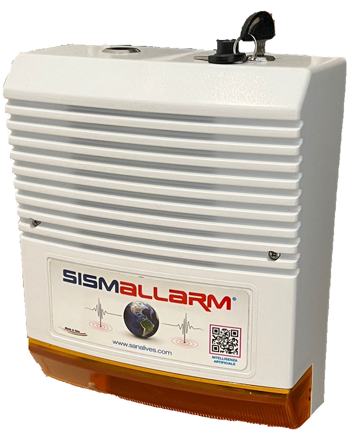
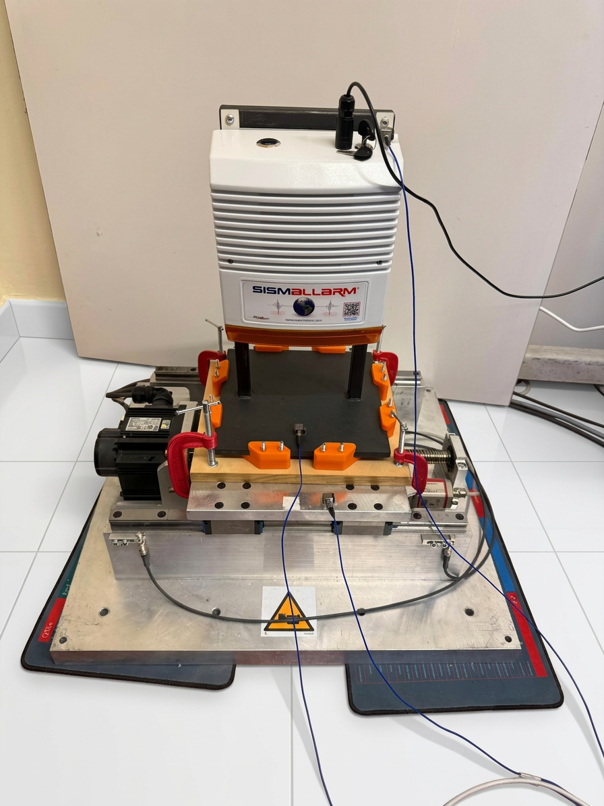

Modello Pro
Dashboard Web inclusa
Sensori ad alta precisione monitorano costantemente le vibrazioni sismiche e intervengono subbito nel momento in cui rilevano scosse pericolose.
Sensori sismici avanzati analizzano in tempo reale le vibrazioni, confrontandole con soglie di energia interne calibrate per rilevare scosse pericolose.
Algoritmi intelligenti determinano se la scossa ha raggiunto livelli critici, attivando immediatamente i protocolli di sicurezza configurati.
Attivazione immediata della sirena e/o chiusura elettrovalvole gas per prevenire fughe e garantire la massima sicurezza dello stabile.
Personalizza il tuo sistema in base alle esigenze specifiche del tuo edificio
Sirena potente integrata da 110dB per segnalazione acustica immediata al rilevamento di scosse pericolose. Disponibile anche in versione autonoma a batteria.
Intervento automatico sulle elettrovalvole delle condutture gas per interrompere immediatamente il flusso in caso di scossa sismica pericolosa.
Dal sistema base alla soluzione completa con monitoraggio cloud
Con connessione Ethernet
Alimentazione a rete elettrica
Autonoma e wireless
Con la versione Pro, accedi al tuo pannello di controllo personale via web. Visualizza lo storico completo delle rilevazioni, ricevi i report e monitora lo stato del sistema da qualsiasi dispositivo.
Registro completo scosse rilevate
Accesso da smartphone e tablet
Alert in caso di guasto
Analisi dati e report mensili
* immagine a scopo illustrativo, il prodotto può variare
Per la versione a batteria, offriamo un piano di manutenzione annuale completo che include la sostituzione programmata della batteria e il controllo funzionale del dispositivo.
Garanzia estesa inclusa
Valida solo con piano manutenzione attivo

Il sistema SismAllarm è stato sottoposto a collaudo funzionale presso i laboratori dell'Università del Sannio, in collaborazione con il Dipartimento di Ingegneria. I test hanno confermato la corretta funzionalità di rivelazione sismica, con una adeguata robustezza dell'algoritmo di elaborazione.
Collaborazione scientifica
Test realizzati in collaborazione con l'Università del Sannio
| Sensore | Accelerometro MEMS ad alta sensibilità |
| Installazione a parete | Fissato con 3 tasselli |
| Alimentazione | 220V AC / Batteria integrata (versione battery) |
| Allarme sonoro | 110dB @ 1 metro, frequenza 3kHz |
| Elettrovalvole | Compatibili 1/2" - 2" |
| Connettività Pro | Ethernet RJ45 |
| Temperatura | -10°C / +45°C umidità 90% non condensante |
Il nostro team tecnico è a disposizione per analizzare le esigenze specifiche del tuo edificio
g_meo@simprogetti.it
info@mctecnologie.net
+39 392 184 10 21
Via On. Francesco Napolitano P CO C
80035 Nola, (NA) Italia